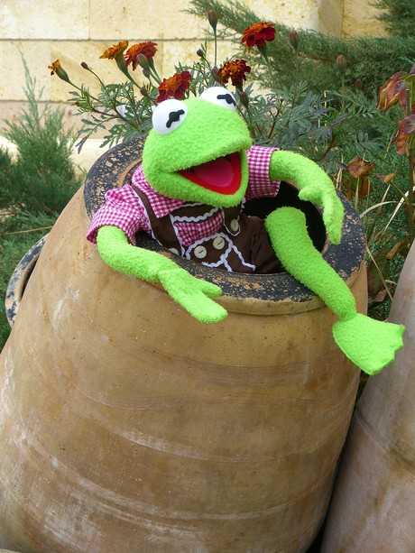
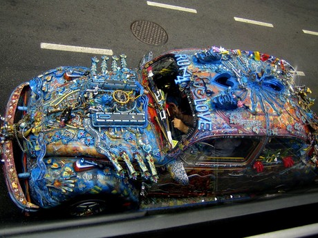

Guía de estudio para el JLPT N5: Adjetivos na parte 2
Ésta es la continuación del artículo listado de adjetivos-na parte 1. Aquí ermino todo el listado de adjetivos que podrían ser evaluados en el exámen JLPT N5 (si así es, podrían! Ten en cuenta que el exámen tiene un número limitado de preguntas y lo más probable es que sólo te evalúen algunas, sin embargo está preparado).
Si ésta es tu primera vez leyendo la guía, te invito a conocer las demás secciones que he escrito haciendo click en la etiqueta JLPT-N5.
1. Maravilloso
けっこう
Kekkou
2. Bonito, hermoso
きれい
Kirei
3. Cortés
ていねい
Teinei
4. Tranquilo
しずか
Shizuka
5. Libre (tiempo)
ひま
Hima
6. Animado, bullicioso
にぎやか
Nigiyaka
7. Varios
いろいろ
Iroiro
8. Sano, robusto, fuerte

じょうぶ
Joubu
9. Desagradable

いや
Iya
10. Importante, valioso
たいせつ
Taisetsu
11. Peligroso
きけん
Kiken
12. Lamentable, decepcionante
ざんねん
Zannen
13. Libre, sin restricciones

じゆう
Jiyuu
14. Suficiente
じゅうぶん
Juubun
15. Adecuado, apropiado
てきとう
Tekitou
16. Ansioso, entusiasta

ねっしん
Nesshin
17. Serio, honesto, sobrio
Foto por kevin
まじめ
Majime
18. Poco razonable

むり
Muri
Agradezco tus sugerencias y comentarios para mejorar éste artículo. Muchas gracias por leer. Nos vemos la próxima semana!
Por acá les dejo una tabla con los anteriores adjetivos:
| Furigana | Hiragana | Significado |
|---|---|---|
| Kekkou | けっこう | Maravilloso |
| Kirei | きれい | Bonito, hermoso |
| Teinei | ていねい | Cortés |
| Shizuka | しずか | Tranquilo |
| Hima | ひま | Libre (tiempo) |
| Nigiyaka | にぎやか | Animado, bullicioso |
| Iro iro | いろいろ | Varios |
| Joubu | じょうぶ | Sano, robusto, fuerte |
| Iya | いや | Desagradable |
| Taisetsu | たいせつ | Importante, valioso |
| Kiken | きけん | Peligroso |
| Zannen | ざんねん | Lamentable, decepcionante |
| Jiyuu | じゆう | Libre, sin restricciones |
| Jubbun | じゅうぶん | Suficiente |
| Tekitou | てきとう | Adecuado, apropiado |
| Nesshin | ねっしん | Ansioso, entusiasta |
| Majime | まじめ | Serio, honesto, sobrio |
| Muri | むり | Poco razonable |
Vía NI
Artículos Relacionados

Guía de estudio para el JLPT N5: Adjetivos na parte 1

Guía de estudio para el JLPT N5: Adjetivos i parte 3